usethis::create_package("bisiestos")Una idea para crear paquetes multilingües
Comencemos…
Qué es un paquete
Un paquete de R es la unidad básica para la distribución de código de R, que reúne de forma estructurada funciones, datos, archivos con documentación y testeos.
¿Por qué podríamos considerar crear un paquete?
Nos da la oportunidad de:
- Compartir de forma sencilla y rápida el trabajo que realizamos.
- Organizar el trabajo dentro de los equipos de trabajo o de investigación.
- Publicar nuevos desarrollos o soluciones que pueden ser útiles para otras personas.
- Darnos a conocer en comunidad.
¿Por qué consideraríamos crear un paquete en otro idioma que no sea inglés?1
- Según un informe reciente de The Linux Foundation, el acceso al idioma es una de las barreras que atentan contra la equidad en el código abierto>
“El idioma predominante del código abierto es el inglés (en el código, el contenido y las interacciones comunitarias) y el dominio del inglés es una métrica mediante la cual se juzga el desempeño y la personalidad.”
Al publicar recursos multilingües, podemos reducir estas barreras aumentando el acceso al conocimiento y democratizando el acceso a recursos de calidad, aumentando así el potencial de las personas para contribuir a proyectos de software y ciencia abierta.
Cuando el desarrollo de software recae en entornos minoritarios, poco representativos o hegemónicos pueden presentarse desventajas, limitaciones y/o posibles sesgos:
- Sesgo cultural, lingüístico, étnico o de género
- Falta de diversidad de ideas
- Limitación de la representación
- Falta de conciencia de problemas éticos
En este taller vamos a jugar a aportar un granito de arena, pensando cómo podríamos armar un paquete de R multilingüe.
Empecemos por repasar cómo es un paquete en general.
La estructura de un paquete
- Crear un paquete no es más que seguir ciertas convenciones para organizar un conjunto de carpetas y archivos.
- Un paquete es una carpeta de nuestra computadora que tiene ciertos elementos obligatorios y algunos otros opcionales.
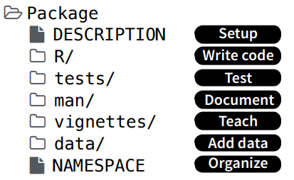
Elementos obligatorios:
- Archivo
Description: describe el contenido del paquete y establece cómo el paquete se va a relacionar con otros. - Carpeta
R: contiene el o los archivos de código de R con las funciones del paquete. - Carpeta
man: contiene archivos con la documentación del paquete, funciones y datasets. - Archivo
NAMESPACE: declara qué funciones nuestro paquete pone a disposición de los usuarios y de qué funciones de otros paquetes hace uso el nuestro, es decir, organiza las cosas para que R pueda encontrar todo lo que necesita cuando usa nuestro paquete.
Elementos opcionales (pero algunos muy necesarios):
- Carpeta
data: contiene objetos de R (por ejemplo,.Rdata) que contienen datos. - Carpeta
vignettes: contiene los tutoriales que muestran ejemplos de uso del paquete, generalmente escritos en Rmarkdown. - Archivo
NEWS: lleva el registro de los cambios implementados en las sucesivas versiones de un paquete. - Archivo
LICENSE: especifica los detalles de la licencia bajo la cual se distribuye el paquete. Es obligatorio bajo ciertos tipos de licencias (como la MIT). - Archivo
.Rbuildignore: lista los archivos y directorios que no deben ser incluidos a la hora de construir el paquete. - Carpeta
tests: incluye código para someter al paquete a diversos controles. - Carpeta
src: incluye archivos fuente para código compilado en otro lenguaje, por ejemplo, C++. - Carpeta
inst: para guardar algunas otras cosas.
Nuestro primer paquete: bisiestos
- En esta sección vamos a crear un paquete de R con muy pocos pasos. ¡A trabajar!
- Para esto, vamos a recibir la ayuda de los paquetes
devtoolsyusethis, que incluyen un montón de funciones para simplificar la tarea de la creación de un nuevo paquete.
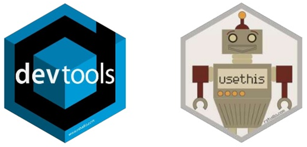
Crear el paquete
- La forma más fácil de crear un paquete es haciendo uso de la función
create_package("nombre_paquete"), que va a generar una carpeta con el nombre provisto en el directorio de trabajo actual. - Si queremos que se genere en otro lugar, debemos indicarle la ruta hacia el mismo, por ejemplo:
create_package("C:/Users/Documentos/nombre_paquete"):
✔ Creating 'bisiestos/'
✔ Setting active project to '/home/marcos/Documents/clases/bisiestos'
✔ Creating 'R/'
✔ Writing 'DESCRIPTION'
Package: bisiestos
Title: What the Package Does (One Line, Title Case)
Version: 0.0.0.9000
Authors@R (parsed):
* First Last <first.last@example.com> [aut, cre] (YOUR-ORCID-ID)
Description: What the package does (one paragraph).
License: `use_mit_license()`, `use_gpl3_license()` or friends to
pick a license
Encoding: UTF-8
Roxygen: list(markdown = TRUE)
RoxygenNote: 7.2.3
✔ Writing 'NAMESPACE'
✔ Writing 'bisiestos.Rproj'
✔ Adding '^bisiestos\\.Rproj$' to '.Rbuildignore'
✔ Adding '.Rproj.user' to '.gitignore'
✔ Adding '^\\.Rproj\\.user$' to '.Rbuildignore'
✔ Opening '/home/marcos/Documents/clases/bisiestos/' in new RStudio session
✔ Setting active project to '<no active project>'- Además de crear esta carpeta, se crea un proyecto de RStudio alojado allí, con el mismo nombre.
- Si estamos trabajando en RStudio, luego de correr
create_package()se abre dicho proyecto en una nueva sesión. - Esto es útil, porque al reconocer que nuestro proyecto trata del desarrollo de un paquete, RStudio provee algunas opciones especiales, como la pestaña
Builden el panel de arriba a la derecha. - Asegurate de adjuntar los paquetes
devtoolsyusethisen esta nueva sesión (devtoolsadjunta también ausethis):
library(devtools)Loading required package: usethis- Podemos ver la existencia de la nueva carpeta
bisiestoscon los archivos recientemente creados en el panelFiles(hay algunos componentes que se crean en esta carpeta y que por ahora podemos ignorar; recordá que acá hay más info):
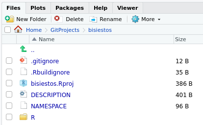
Crear los archivos de código
- Las funciones que programemos tienen que ir en archivos
.Rdentro de la carpetaR. - Esto se hace automáticamente con la función
use_r(), en la cual especificamos el nombre del archivo de código:
use_r("funciones")● Modify 'R/funciones.R'- Vamos a agregar en este archivo el código para la creación de una función que nos determina si un año provisto es bisiesto o no.
- Para repasar acerca de la escritura de funciones, podés visitar estos capítulos de los libros R for Data Science o Advanced R.
- Copiá y guardá esto en el archivo recién creado:
bisiesto <- function(x = as.integer(format(Sys.Date(), "%Y"))) {
# Chequear argumento
if (!is.numeric(x)) {
stop("El valor provisto para x no es numerico.")
}
x <- as.integer(x)
# Determinar si es bisiesto (TRUE/FALSE)
res <- ((x %% 4 == 0) & (x %% 100 != 0)) | (x %% 400 == 0)
mensaje <- paste(x, ifelse(res, "es un año bisiesto.", "no es un año bisiesto."), collapse = "\n")
cat(mensaje)
}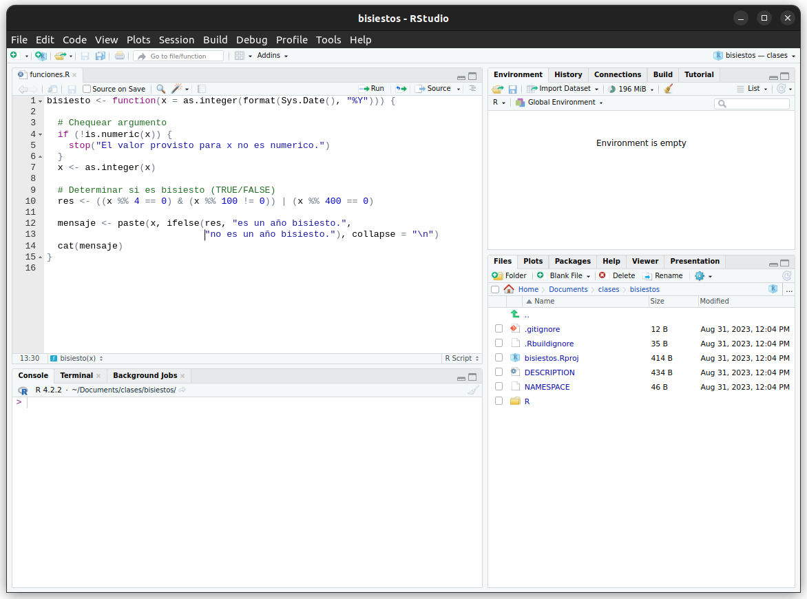
- Seguramente nos interese ir probando nuestra función a medida que la estamos desarrollando o cuando creemos que la hemos finalizado.
- Es decir, nos interesa tenerla disponible en nuestro ambiente de trabajo para poder usarla.
- La idea natural sería correr el código anterior, o hacer
source(R/funciones.R). - Sin embargo,
devtoolsnos provee otro enfoque más adecuado para cargar todo el contenido del paquete que estamos desarrollando. - Se trata de la función
load_all(), o su atajoctrl + shift + l:
load_all()Loading bisiestos- Como resultado, todas las funciones definidas están listas para ser usadas (aunque no las veamos en el global environment) y podemos probarlas:
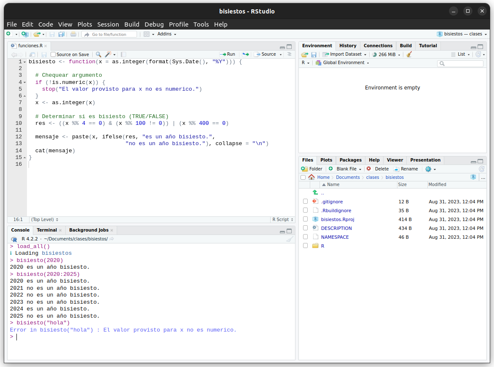
Escribir la documentación
A la hora de armar un paquete (y de crear cualquier función en general) es importante dedicarle unos minutos a la creación de la documentación, es decir, describir cómo se usa cada función, para qué sirven los argumentos, aclarar qué tipo de resultado devuelve, proveer ejemplos para el uso, etc.
Esto es particularmente importante si pretendemos compartir el paquete con otras personas, pero también nos ayuda a nosotros para que no nos olvidamos en el futuro qué quisimos hacer y evitemos perder tiempo tratando de descifrar cómo andan las funciones que escribimos en el pasado.
Específicamente, documentar el paquete y sus funciones significa crear todas las páginas que vemos cuando exploramos el manual de ayuda.
Por suerte, armarlo no es tan complicado como uno lo podría imaginar, ya que contamos con la ayuda del paquete
roxygen2(lo difícil es escribir ayuda que sea entendible y útil para otros…).Este paquete provee pautas para escribir comentarios con un formato especial que incluyan toda la información requerida justo antes de la definición de la función.
Esto hace que tomemos la costumbre de escribir la documentación al mismo tiempo que creamos la función, sin que se vuelva una carga pesada para más adelante.
Estando parados sobre la definición de la función, vamos al menú
Codey elegimosInsert Roxygen Skeleton.Veremos cómo automáticamente se monta un esqueleto para que completemos donde corresponda.
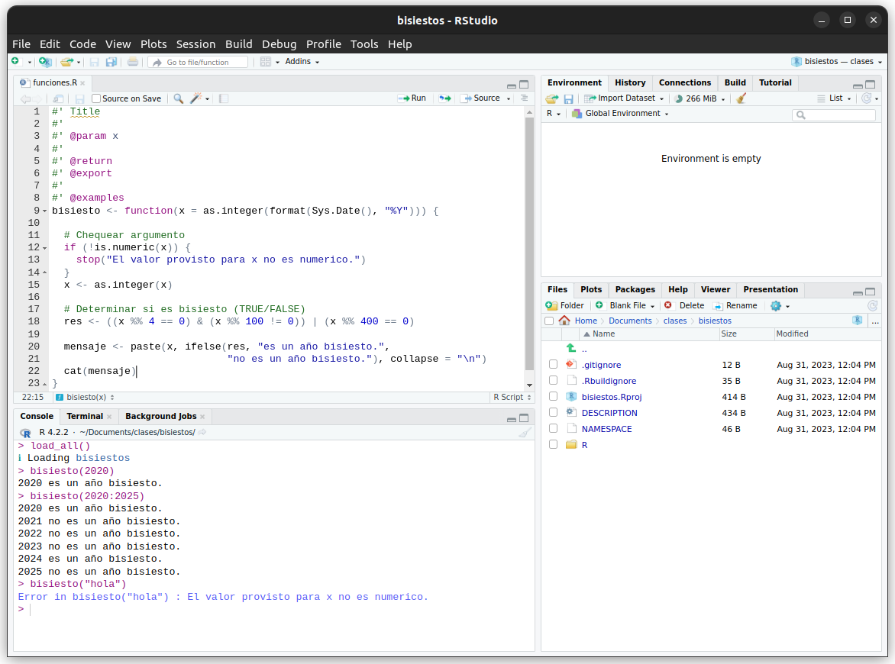
- No reniegues, reemplazá ese esqueleto por estas líneas de documentación, juntos vamos a ver a qué apunta cada componente:
#' La función bisiesto
#'
#' Esta función analiza si el año o los años provistos son bisiestos o no. Los
#' años bisiestos ocurren cada 4 años, excepto los terminados en 00, los cuales
#' son bisiestos sólo si son divisibles por 400. Es decir, los años como 1600,
#' 1700, 1800 son bisiestos si son divisibles por 400. Por ejemplo, el año 1900
#' no fue bisiesto a pesar de ser divisible por 4, pero el año 2000 sí lo fue
#' por ser divisible por 400. Entonces, para que un año dado sea bisiesto, se
#' debe cumplir una de las siguientes condiciones: el año es divisible por 4
#' pero no divisible por 100, o el año es divisible por 400.
#'
#' @param x vector numérico de largo mayor o igual a 1 con los años a evaluar.
#' Por default, toma el año actual.
#'
#' @return la función imprime mensajes en la consola para indicar si los años
#' provistos son o no bisiestos. Devuelve un valor NULL invisible.
#'
#' @details Si `x` contiene valores no enteros, se toma su parte entera. Esta
#' función sirve para los años antes de Cristo, si se los considera bajo la
#' numeración astronómica de los años (incluye un año 0 y luego cuenta en
#' negativo, por ejemplo, el año 0 es 1 AC o el año -1 es 2 AC.).
#'
#' @seealso \url{https://es.wikipedia.org/wiki/Año_bisiesto}
#'
#' @examples
#' bisiesto(2019)
#' bisiesto(2020)
#' bisiesto(2020:2025)
#'
#' @exportUna vez que hemos documentado la o las funciones, se tienen que generar los archivos
.Rdque compondrán el manual y que deben ir guardados en la carpetaman.Además, hay que modificar el archivo
NAMESPACEdel paquete para especificar qué funciones van a estar disponibles para los usuarios, según lo que hayamos indicado con las etiquetas@export.Otra vez, por suerte todo esto se puede hacer automáticamente, al correr la función
document()o su atajoctrl + shift + d:
document()==> devtools::document(roclets=c('rd', 'collate', 'namespace'))
Updating bisiestos documentation
Updating roxygen version in /home/marcos/GitProjects/bisiestos/DESCRIPTION
Writing NAMESPACE
Loading bisiestos
Documentation completed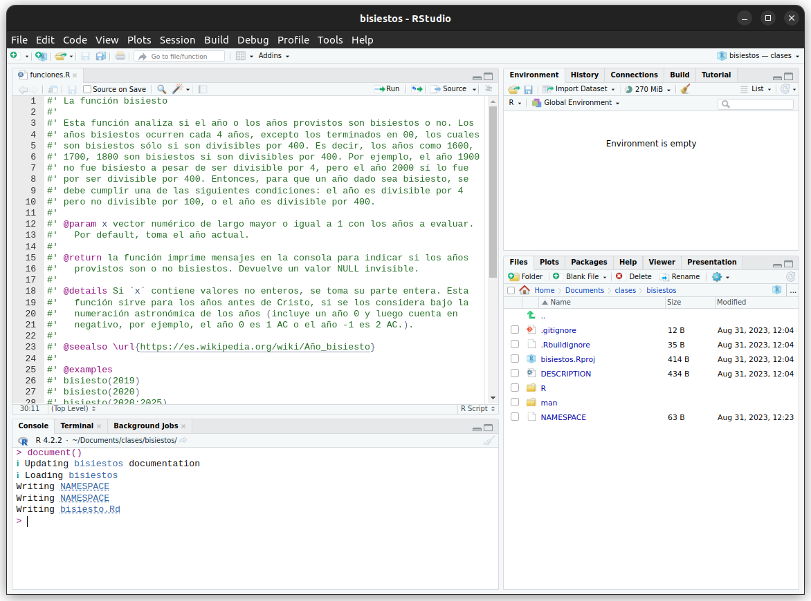
- Las funciones que no se exportan, son de uso interno del paquete y son todas aquellas que no tienen la etiqueta
@export. Será útil recordar esto en un rato.
Instalar el paquete
Aunque no lo creas, ¡ya hemos terminado la primera versión de nuestro paquete y estamos en condiciones de instalarlo!
Esto lo podemos hacer de varias formas:
- Corriendo
install() - Usando el atajo
ctrl + shift + b - Haciendo clic en
Install and restartde la pestañaBuild.
- Corriendo
install()── R CMD build ───────────────────────────────────────────────────────────────────
✔ checking for file ‘/home/marcos/Documents/clases/bisiestos/DESCRIPTION’ ...
─ preparing ‘bisiestos’:
✔ checking DESCRIPTION meta-information ...
─ checking for LF line-endings in source and make files and shell scripts
─ checking for empty or unneeded directories
─ building ‘bisiestos_0.0.0.9000.tar.gz’
Running /usr/lib/R/bin/R CMD INSTALL \
/tmp/RtmpZLHGHD/bisiestos_0.0.0.9000.tar.gz --install-tests
* installing to library ‘/home/marcos/R/x86_64-pc-linux-gnu-library/4.2’
* installing *source* package ‘bisiestos’ ...
** using staged installation
** R
** byte-compile and prepare package for lazy loading
** help
*** installing help indices
** building package indices
** testing if installed package can be loaded from temporary location
** testing if installed package can be loaded from final location
** testing if installed package keeps a record of temporary installation path
* DONE (bisiestos)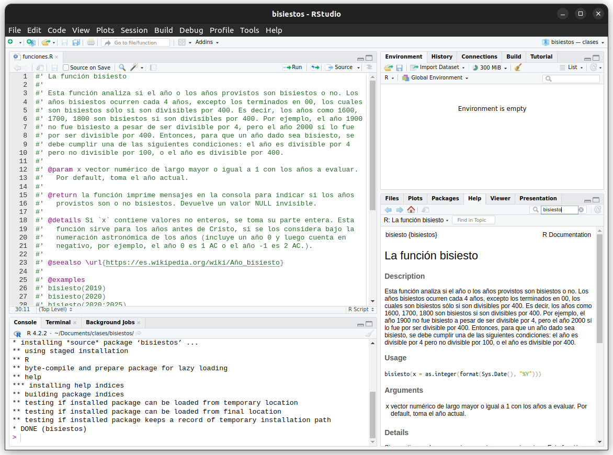
- Ya podés visitar la Ayuda sobre tu función… ¿se siento lindo, no?
- Este proceso finaliza con la carga del paquete a través de
library(bisiestos), indicando que está listo para ser usado, como cualquier otro paquete, no solamente ahora, si no que ya podemos cerrar R y volver a emplearlo en cualquier otro momento. - ¡Felicitaciones! ¡Acabás de crear tu primer paquete de R! Si tenés ganas podés iniciar una nueva sesión, correr
library(bisiestos)y usar la funciónes_bisiesto().
Otras cuestiones
Con lo anterior ya tenemos un paquete andando. Para dejarlo más completito, tendríamos que presetarle atención a otras cuestiones como:
- Editar el archivo
DESCRIPTION. - Enteder y revisar las dependencias con otros paquetes.
- Someter el paquete a prueba:
R CMD check. - Establecer una licencia de uso.
- Agregar testeos.
- Escribir un
README(y añadir badges). - Escribir el archivo
NEWS. - Escribir viñetas.
- Agregar datasets.
- Diseñar un logo.
- Crear una página web.
- Agregar un sistema de control de versiones como
gity publicarlo en GitHub. - Subir el paquete a algún repositorio.
- Editar el archivo
Recordá que acá hay más info.
Ahora… convertirlo en multilingüe
La función que escribimos recién está en español (su nombre, sus mensajes) y así como está sería difícil implementarla en otros idiomas.
Vamos a seguir la siguiente estrategia:
- Crear funciones internas que hagan el trabajo sucio.
- Estas funciones implementarán todo el código necesario, no serán accesibles para los usuarios del paquete y tendrán un argumento extra para indicar con qué
idiomase está usando el paquete (por ejemplo:"en","es"). - Dependiendo del
idioma, se elegirían los mensajes para mostrar.
- Crear una lista como objeto global para guardar todos los mensajes, independiente de la defición de las funciones internas.
- Llamaremos esta lista
mensajes. - Contiene, a su vez, otras listas, una por cada idioma a implementar, con los mensajes escritos en ese idioma.
- Inicialmente dejamos vacía a la lista
mensajes. Cada vez que alguien agregue un idioma, le irá agregando un elemento más.
- Por cada idioma a agregar, creamos dos nuevos scripts de R,
funciones_*.Rymensajes_*.R.
funciones_*.R(ejemplo:funciones_es.R,funciones_en.R): definimos las funciones a exportar, dándoles un nombre en el idioma en cuestion. Estas funciones sólo son un wrapper a las funciones internas definidas antes, que al llamarlas le pasan el argumentoidiomacon el valor adecuado según el idioma que se esté usando ("en","es").mensajes_*.R(ejemplo:mensajes_es.R,mensajes_en.R): agregan a la lista globalmensajesuna sublista, cuyo nombre es el valor que usamos para el argumentoidioma("en","es"). Esta sublista tiene todos los mensajes que usaremos, escritos en el idioma correspondiente.- Todo esto podría estar en un mismo script, pero si el paquete es grande, vamos a tener muchos wrappers a funciones internas, y muchos mensajes a escribir en cada idioma, por lo cual es más ordenado y conveniente mantener estas cosas por separado.
Es más claro si lo hacemos…
Funciones internas
- Borremos todo el contenido de nuestro script
funciones.Rpara poner allí la definición de la lista global demensajesy la definición de la función interna que se encarga de ver si un año es o no bisiesto:
# Variable global para guardar los mensajes, arranca vacía y se va llenando al
# definir nuevos idiomas
mensajes <- list()
#' Definición de la función interna (queda propuesto: documentarla, pero no es
#' obligatorio para las funciones internas)
#'
#' @keywords internal
#'
.bisiesto <- function(x, idioma) {
# Chequear argumento
if (!is.numeric(x)) {
stop(mensajes[[idioma]]$x_no_numerico)
}
x <- as.integer(x)
# Determinar si es bisiesto (TRUE/FALSE)
res <- ((x %% 4 == 0) & (x %% 100 != 0)) | (x %% 400 == 0)
mensaje <- paste(x, ifelse(res, mensajes[[idioma]]$es_bisiesto,
mensajes[[idioma]]$no_es_bisiesto), collapse = "\n")
cat(mensaje)
}- Notemos la incorporación del argumento
idiomay que de él depende la escritura de mensajes. - Por ejemplo, antes teníamos
"El valor provisto para x no es numerico."y ahoramensajes[[idioma]]$x_no_numerico. - La lista global de
mensajestendrá que tener una sublista llamada conidioma, la cual contiene un string bajo el nombre dex_no_numerico. - Ese string es el que estará escrito en distintos idiomas.
- Ocurre lo mismo para los otros mensajes a emitir.
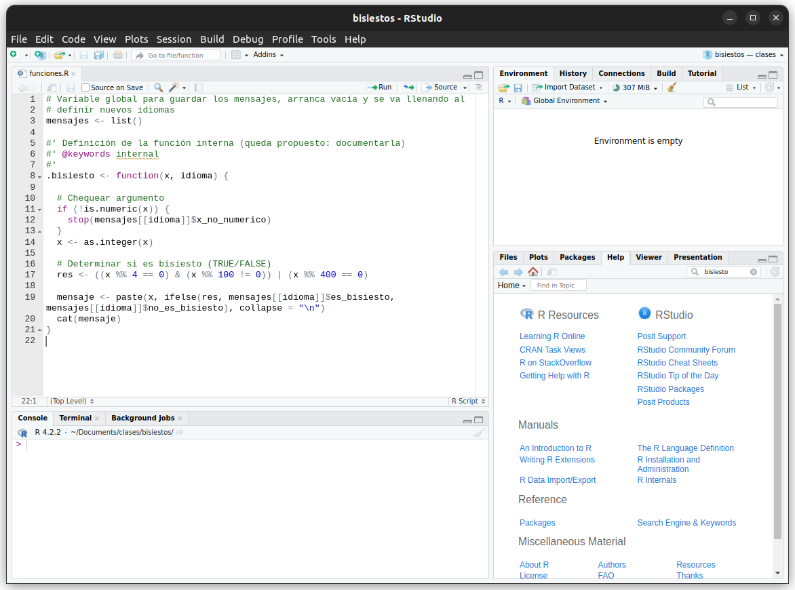
Agregar un idioma
- Ahora estamos en condiciones de agregar distintos idiomas con los que se pueda usar este paquete.
- Empecemos agregando al Español.
Creamos mensajes_es.R:
- Creamos un archivo con todos los mensajes en Español:
use_r("mensajes_es.R")- Usamos este archivo para agregarle a la lista global
mensajesuna sublista llamada"es", con los tres mensajes que emite nuestro paquete, escritos en español:
mensajes[["es"]] <- list(
x_no_numerico = "El valor provisto para x no es numérico.",
es_bisiesto = "es un año bisiesto.",
no_es_bisiesto = "no es un año bisiesto."
)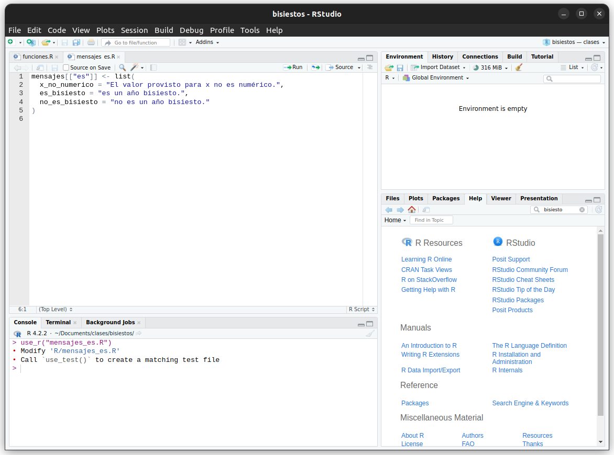
Creamos funciones_es.R
- Creamos un archivo para guardar todos los wrappers en Español que llaman a las funciones internas:
use_r("funciones_es.R")- Implementamos el wrapper, usando el argumento
idioma = "es". - Le agregamos acá una linda documentación escrita en español:
#' La función bisiesto
#'
#' Esta función analiza si el año o los años provistos son bisiestos o no. Los
#' años bisiestos ocurren cada 4 años, excepto los terminados en 00, los cuales
#' son bisiestos sólo si son divisibles por 400. Es decir, los años como 1600,
#' 1700, 1800 son bisiestos si son divisibles por 400. Por ejemplo, el año 1900
#' no fue bisiesto a pesar de ser divisible por 4, pero el año 2000 sí lo fue
#' por ser divisible por 400. Entonces, para que un año dado sea bisiesto, se
#' debe cumplir una de las siguientes condiciones: el año es divisible por 4
#' pero no divisible por 100, o el año es divisible por 400.
#'
#' @param x vector numérico de largo mayor o igual a 1 con los años a evaluar.
#' Por default, toma el año actual.
#'
#' @return la función imprime mensajes en la consola para indicar si los años
#' provistos son o no bisiestos. Devuelve un valor NULL invisible.
#'
#' @details Si `x` contiene valores no enteros, se toma su parte entera. Esta
#' función sirve para los años antes de Cristo, si se los considera bajo la
#' numeración astronómica de los años (incluye un año 0 y luego cuenta en
#' negativo, por ejemplo, el año 0 es 1 AC o el año -1 es 2 AC.).
#'
#' @seealso \url{https://es.wikipedia.org/wiki/Año_bisiesto}
#'
#' @examples
#' bisiesto(2019)
#' bisiesto(2020)
#' bisiesto(2020:2025)
#'
#' @export
#'
bisiesto <- function(x = as.integer(format(Sys.Date(), "%Y"))) {
.bisiesto(x, idioma = "es")
}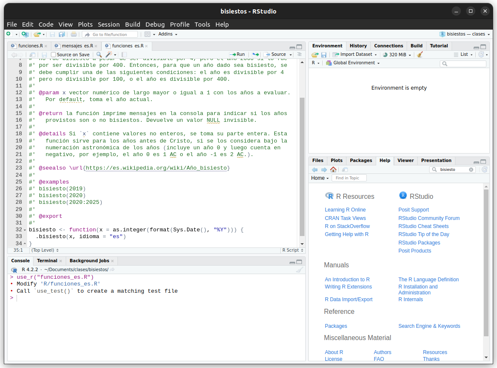
- ¡Listo!
- Carguemos la nueva versión de nuestro paquete y probemos cómo lo usamos en Español:
load_all()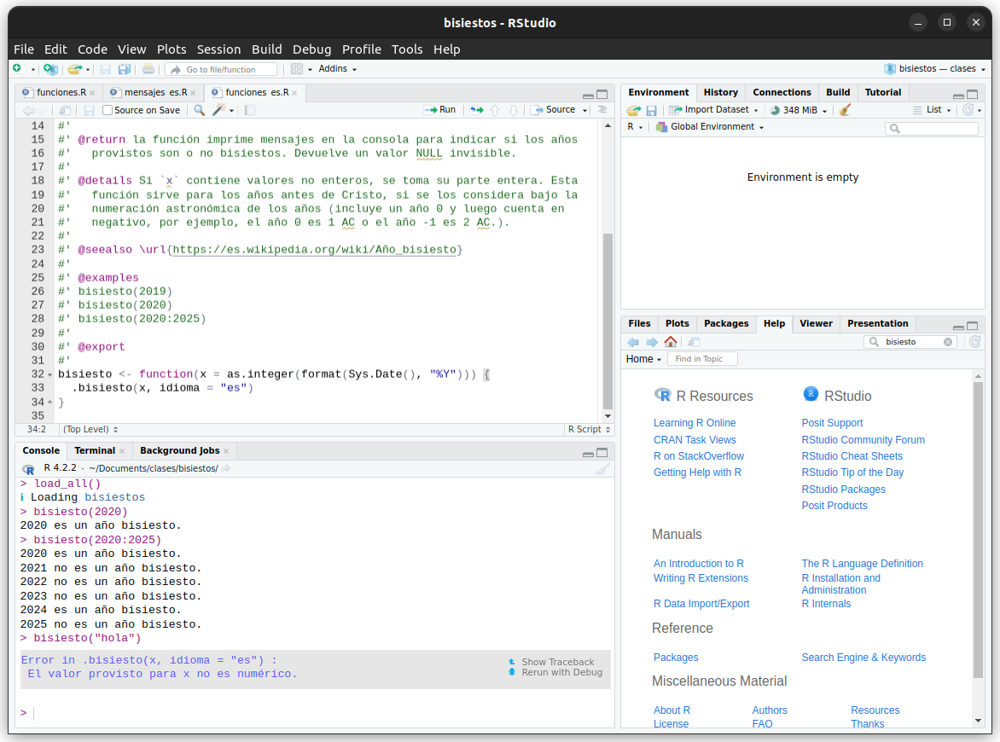
Y ahora… ¡agregar cualquier otro idioma!
- Podemos repetir esta estructura fácilmente con más idiomas.
Agregamos inglés
- Archivo
mensajes_en.Ry su contenido:
use_r("mensajes_en.R")mensajes[["en"]] <- list(
x_no_numerico = "The value provided for x is not numeric.",
es_bisiesto = "is a leap year.",
no_es_bisiesto = "is not a leap year."
)- Archivo
funciones_en.Ry su contenido (¡falta la documentación!):
use_r("funciones_en.R")#' @export
leap_year <- function(x = as.integer(format(Sys.Date(), "%Y"))) {
.bisiesto(x, idioma = "en")
}Agregamos portugués
- Archivo
mensajes_pt.Ry su contenido:
use_r("mensajes_pt.R")mensajes[["pt"]] <- list(
x_no_numerico = "O valor fornecido para x não é numérico.",
es_bisiesto = "é um ano bissexto.",
no_es_bisiesto = "não é um ano bissexto."
)- Archivo
funciones_pt.Ry su contenido (¡falta la documentación!):
use_r("funciones_pt.R")#' @export
bissexto <- function(x = as.integer(format(Sys.Date(), "%Y"))) {
.bisiesto(x, idioma = "pt")
}Probar cómo funciona
- Carguemos una vez más nuestro paquete multilingüe y comprobemos que efectivamente lo podemos usar en varios idiomas.
- Tanto los nombres de las funciones, como los mensajes emitidos y las páginas de ayuda están disponibles en los lenguajes implementados2.
load_all()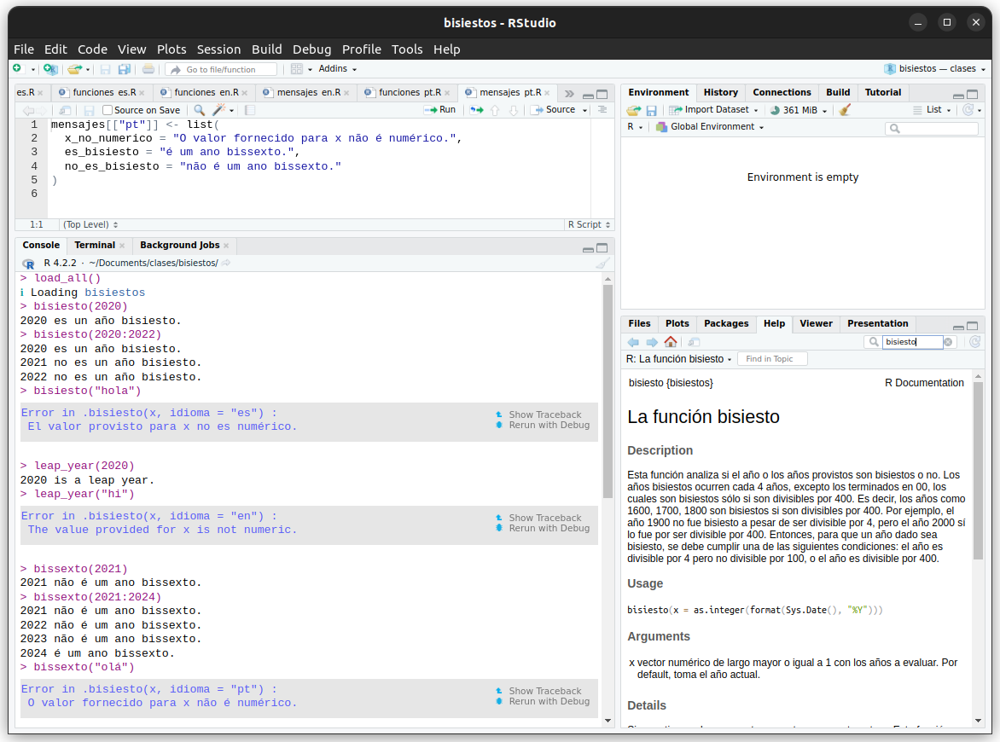